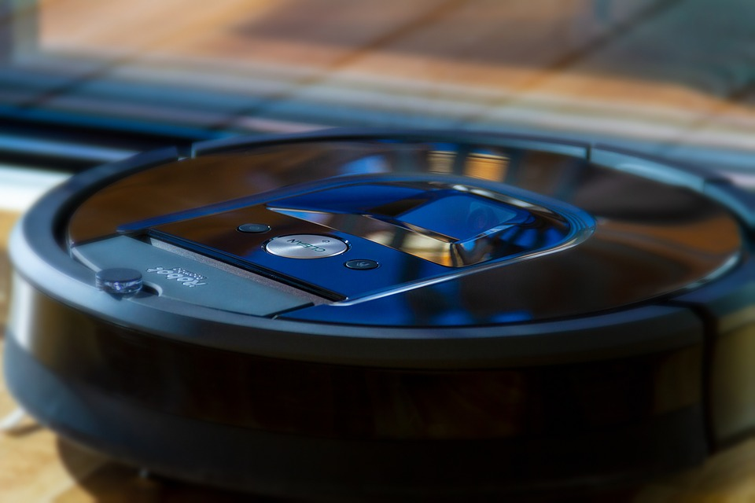

PENYEDOT DEBU DAN PEL (VACUUM CLEANER ROBOTIC) 360 DERAJAT
Nama anggota Kelompok :
1. Dwi Ira
2. Kristianti
3. Rida Razkita
4. Titania Puspa
SC A PAGI
Tes dulu
(VACUUM CLEANER ROBOTIC) 360 DERAJAT
 >>>>>>> 3bcff139f3fa13b6b413d6a84c3496ad998670f2Kelemahan dan Kelebihan Robot Vacum Cleaner
Kelamahan Robot Vacuum Cleaner :
1. Tidak dapat membersihkan permukaan yang miring Robot vacuum cleaner dibekali dengan roda penggerak untuk berjalan mengelilingi ruangan. Jika robot menemui permukaan yang miring lebih dari 30 derajat, kemungkinan besar ia tidak dapat menanjak. Misal seluruh permukaan lantai Anda datar atau tidak lebih dari 30 derajat, maka aman-aman saja. 2. Tidak dapat bekerja di ruangan gelap total Robot vacuum cleaner mengandalkan kamera untuk memetakan ruangan sehingga ia dapat membersihkan seluruh lantai dengan maksimal tanpa meninggalkan kotoran sedikitpun. Jika ruangan gelap total, maka kamera sulit untuk memetakan. 3. Hanya cocok untuk lingkup rumahan Jika Anda berharap robot vacuum cleaner untuk membersihkan ruangan dalam skala besar, maka tidak tepat. Katakanlah Anda ingin agar robot penghisap debu ini membersihkan gudang dengan luar 20×40 meter. Sebelum ia selesai membersihkan separuh gudang, dipastikan kembali ke docking station untuk melakukan pengisian baterai.
Kelebihan Robot Vacuum Cleaner :
1. Mudah digunakan robot vacuum cleaner, Namanya robot jelas akan bekerja sendiri, jadi Anda cukup memberikan perintah di awal saja. Jadinya robot penyedot debu ini akan berjalan otomatis. Perintah yang dilakukan pun cukup memilih jenis pembersihan dan jadwal saja. Setelah itu robot vacuum cleaner akan bekerja sesuai otomatis perintah, tidak ada pengaturan lain. Jika terdapat area atau ruangan Anda tidak ingin robot masuk, cukup berikan batasan. Salah satu caranya adalah memberikan sebuah pita magnetik. Beberapa tipe robot dapat membersihkan ruangan, berhenti untuk mengisi baterai, lalu kembali membersihkan. Intinya cukup beri perintah di awal, dan robot akan bekerja sesuai yang kita mau. 2. Bentuk ringkas Kebanyakan robot vacuum cleaner memiliki bentuk yang ringkas, rata-rata bentuknya seperti piringan tebal. Jadi robot dapat masuk ke bawah perabotan dengan mudah, terlebih lagi untuk membersihkan sudut-sudut ruangan. Bentuk sisinya yang melingkar memudahkannya untuk melewati kaki-kaki meja atau kursi dengan efektif. Bodinya pun memiliki pelindung ala bemper, sehingga tak masalah ketika tak sengaja membentur dinding. 3. Pintar Sebagai informasi, teknologi yang digunakan oleh robot vacuum cleaner ini mirip seperti robot penyapu ranjau darat yang digunakan militer. Oleh karena itu jangan kaget jika sebuah robot vacuum cleaner dibekali dengan berbagai sensor untuk mendeteksi: -kotoran (tak hanya mendeteksi, tetapi juga membersihkan sebuah area hingga tidak ada lagi kotoran) -ketinggian (dalam hal ini tangga, sehingga tidak jatuh) -jalur (mengetahui jalur mana saja yang sudah dilalui) -lokasi docking station (untuk keperluan mengisi baterai) -rintangan -sisa kapasitas baterai 4. Awet Karena dibekali dengan berbagai sensor pintar, maka robot vacuum cleaner tentunya diproduksi dengan kualitas tinggi, terutama suku cadangnya. Selain itu garansi pasti diberikan oleh pihak distributor sehingga Anda tak perlu khawatir jika terdapat kerusakan. 5. Praktis Beberapa aksesoris dari robot vacuum cleaner pun dijual terpisah, sehingga mudah untuk diganti. Katakanlah sikatnya sudah tidak rapat sehingga tidak dapat menarik debu dengan maksimal, solusinya cukup diganti. Begitu juga dengan aksesoris lain seperti baterai, filter, mekanisme pembersihan dan lainnya. 6. Jaga privasi Anda orang yang sangat menghargai privasi? Tentunya akan terasa risih jika ada orang lain masuk ke ruangan pribadi (katakanlah kamar tidur) untuk membersihkan ruangan, dalam hal ini pembantu rumah tangga. Ditambah Anda tidak ada waktu untuk bersih-bersih, alhasil kamat tidur pun tak pernah dibersihkan alias disapu dan dipel. Robot vacuum cleaner pun dapat menjadi solusi yang tepat. 7. Tak ada kabel bersliweran Jika Anda menggunakan vacuum cleaner konvensional, tentunya kabel akan bersliweran di ruangan. Hal ini tak akan terjadi jika menggunakan robot vacuum cleaner. 8. Cocok untuk Anda yang alergi debu Sama seperti vacuum cleaner konvensional, robot vacuum cleaner juga dibekali dengan filter HEPA. Filter jenis ini dapat menangkap partikel debu kecil berukuran 0,3 micron. Bagi Anda yang alergi debu, maka filter ini sangat membantu. Jika Anda tidak dapat menemukan robot penghisap debu yang memiliki standar HEPA untuk filter, setidaknya pilih yang memiliki sistem filtrasi baik.
Touch Interaction
Powered by bespoke-touch
Responsive Slides
Powered by bespoke-scale
Bullet List
Powered by bespoke-bullets
- Bullet 1
- Bullet 2
- Bullet 3
Syntax Highlighting
Powered by Lea Verou's Prism
(function() {
function hanoi(n, a, b, c) {
return n ? hanoi(n - 1, a, c, b)
.concat([[a, b]])
.concat(hanoi(n - 1, c, b, a)) : [];
}
return hanoi(3, 'left', 'right', 'mid')
.map(function(d) {
return d[0] + ' -> ' + d[1];
});
})();Named Route
Powered by bespoke-hash
Look up! This route has been named with a data-bespoke-hash attribute.
Just the beginning…
- Edit HTML markup in src/index.html
- Edit Stylus styles in src/styles/user.styl
- Edit JavaScript in src/scripts/main.js
- Enjoy! :) -@markdalgleish